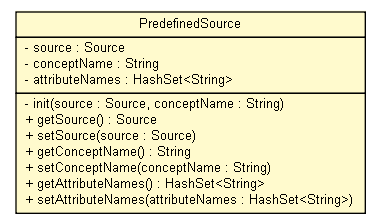

tud.iir.persistence
Class PredefinedSource

java.lang.Object
 tud.iir.persistence.PredefinedSource
tud.iir.persistence.PredefinedSource
public class PredefinedSource
- extends java.lang.Object
Sources can be predefined in an xml file.
| Methods inherited from class java.lang.Object |
clone, equals, finalize, getClass, hashCode, notify, notifyAll, toString, wait, wait, wait |
source
private Source source
conceptName
private java.lang.String conceptName
attributeNames
private java.util.HashSet<java.lang.String> attributeNames
PredefinedSource
public PredefinedSource(Source source,
java.lang.String conceptName)
PredefinedSource
public PredefinedSource(Source source,
java.lang.String conceptName,
java.util.HashSet<java.lang.String> attributeNames)
init
private void init(Source source,
java.lang.String conceptName)
getSource
public Source getSource()
setSource
public void setSource(Source source)
getConceptName
public java.lang.String getConceptName()
setConceptName
public void setConceptName(java.lang.String conceptName)
getAttributeNames
public java.util.HashSet<java.lang.String> getAttributeNames()
setAttributeNames
public void setAttributeNames(java.util.HashSet<java.lang.String> attributeNames)